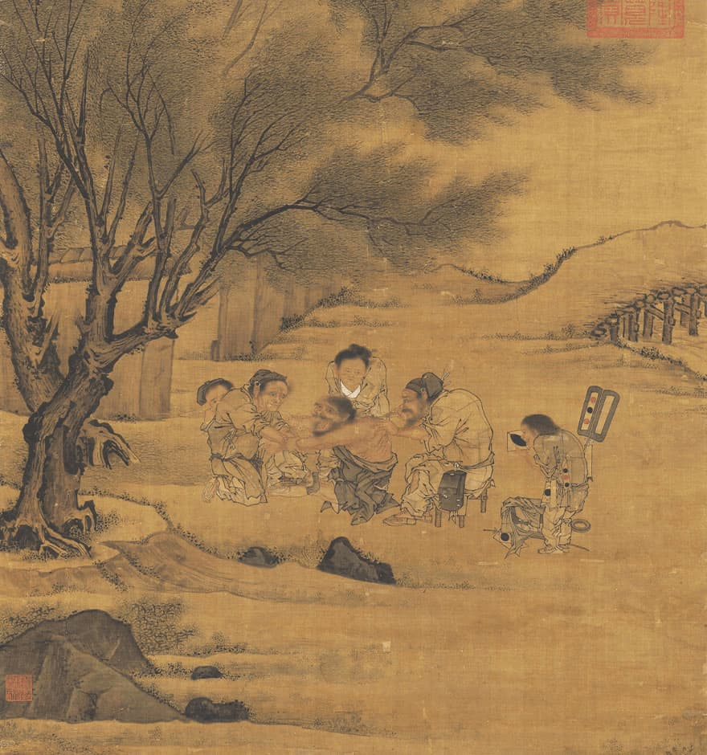
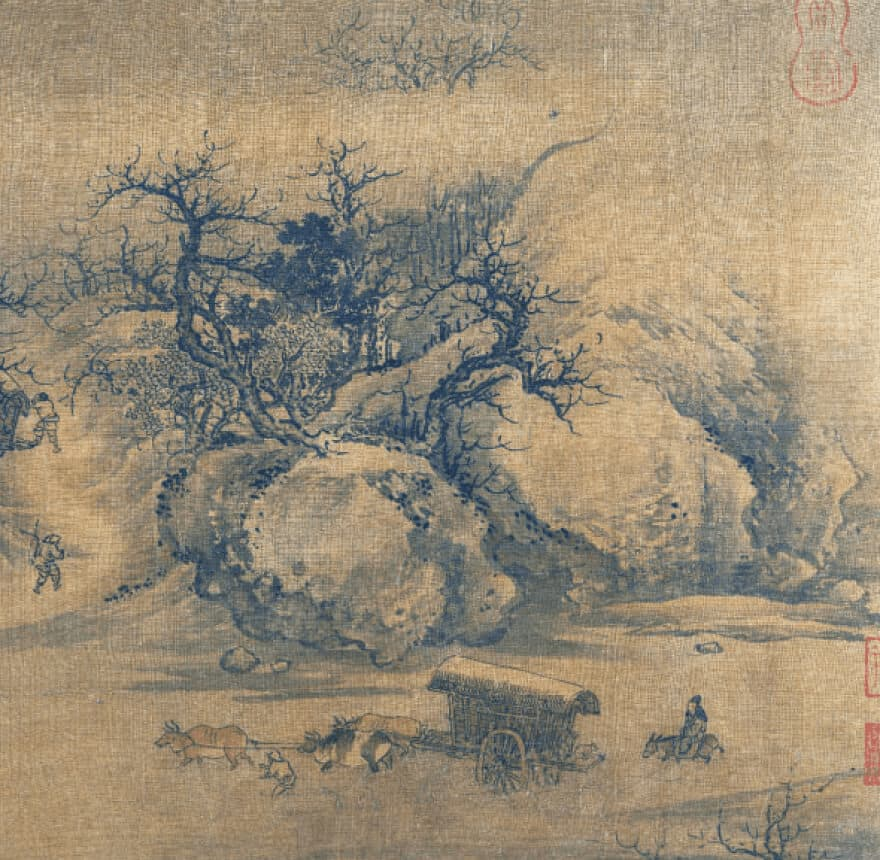
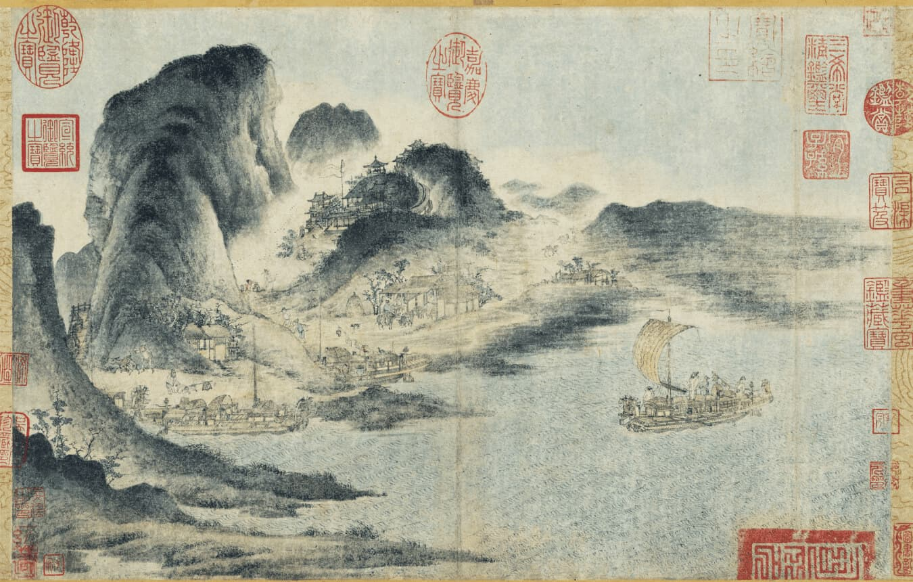

A Contemporary
Way of Life
in Ancient Chinese Paintings
The Song dynasty’s astonishing economic and agricultural growth offered the general populace a sense of harmony, as witnessed through art and culture.
The Song dynasty (960–1279) marked a period of incredible economic growth in China. The era saw pivotal innovations, such as paper currency and block and moveable type printing, the latter invented some four hundred years before Gutenberg’s printing press in Europe.
“During the Song dynasty, the middle-class and even working people shared many joys with the rich, distinguished in price but not in kind, including tea, good food, nature, and fine art.”
Martin Powers Professor Emeritus in the History of Art, and former Sally Michelson Davidson Professor of Chinese Arts and Cultures, University of Michigan
The growth of cities and the development of a prosperous market and trade system is often captured in paintings, reflecting the flourishing economic landscape of the Song dynasty.
Thriving Communities
Lively commercial activity in bustling metropolises can be seen in many Song-era paintings.
The Northern Song capital of Bianjing (present-day Kaifeng) is said to have had more than a million people, making it the most populous city in the world at the time. In Dragon Boat Race on Jinming Lake, the artist captures a detailed account of a well-attended dragon boat race in the city with depictions of discernible attendees.
Likewise, the famous handscroll Along the River at a Qingming Time also depicts such communities in fine detail, where one can almost hear the dense throngs of revelers celebrating the traditional festival in the street. “In the painting, we find people of different income levels mixing together because class exclusion was no longer an instrument of government,” says Powers, currently also the Visiting Chaired Professor at Peking University.
“In the year 971, Song’s first emperor Taizu issued an edict stating that tenants should be registered as taxpaying citizens just the same as landlords,” adds Powers. This promoted the development of an egalitarian society, and a culture of informality thus emerged in works of art, showcasing daily activities such as playing football with friends in The Football (Cuju) Players, or getting treated by the doctor with mugwort remedies in Moxibustion.
-

The Football (Cuju) Players -
 Moxibustion

In Knick-knack Peddler and Children Playing, a study of folk life from the Southern Song period, a woman and village children crowd around a countryside vendor who is selling goods strung around his shoulders, ranging from trinkets and toys to wine, tea, food, and medicine.
An Early
Industrial
Revolution
The painting The Water Mill at the Dam captures the astonishing industrial sophistication during this time, showing workers processing grain in a mill.
“The Song government used public funds to build water powered mills, which made use of the natural flow of water to help the people grind grain into flour more cheaply,” says Powers, evidence of what he calls “enlightened government”.
To the right is a gate tower called 'cailou huanmen', made of bamboo, wood, and decorated with strips of colored silk. This type of structure was a form of advertising popular during the Song dynasty, used by the hospitality industry to attract customers to the establishment.
Industrial and technological development rose to new heights, and the increasingly sophisticated iron works and newly created canals paved the way for the transportation of goods between cities.
As seen through the fine details in Traveling on a River After Snow, maritime trade flourished. Drawn with precision, two large, loaded commercial boats move along through the snowy river in the morning, while the vast number of cargo hints at the diversity of products available at the time.
Porcelain and silk, two of the most important commercial industries at the time, are seen in paintings such as Sericulture (The Process of Making Silk), which depicts the stages of silk manufacturing, from silkworm farming to spinning of the material.
According to the Cambridge Illustrated History of China, by the end of the 11th century, the use of charcoal was eventually replaced by bituminous coke, which spared acres of forest from the steel and iron industry.
Harmony with Nature
The prevailing imperial painting style, especially during the Northern Song period, favored a naturalistic, highly realistic portrayal of the physical world that highlighted the idea of ‘hé’, or of being in harmony with nature.
Despite the vast industrialism (or perhaps, thanks to it allowing for greater distribution of literature and knowledge), artists never forgot to give weight to the powerful mountains, streams, trees, and skies—placing humans at a much smaller scale within the frame.
Song society was greatly influenced by integrated philosophies from Confucianism, Daoism and Buddhism, forming a unique school of thought that emphasized the interdependent relationship between humans and the universe.
“The Song dynasty was the first civilization on the planet to base both its ethical and political systems on the understanding that society is part of nature and must work with natural processes in order to survive,” says Powers.
In Traveling Along Streams and Mountains, the humans and the cattle-drawn carriage carrying goods are the smallest element surrounded by majestic mountain crags and peaks. Similarly, the painting River Boats and Mountain Town, which depicts rich activity between massive moored ships and the shore, represent a harmonious blend of commerce, working class people, and nature.
-
 Traveling Along Streams and Mountains -
 River Boats and Mountain Town
With an increased emphasis on documenting vernacular stories and the lives of the ordinary people, Song-era paintings can tell us a lot about how the Chinese way of life evolved some 1,000 years ago to create a foundation for the way China is today. From the way children played to what people bought at thriving markets; daily diversions to the high arts; fashion to faith, these topics and more can be explored in detail in the art series: The Song, Painted.
The views and opinions expressed by those interviewed are solely their own.